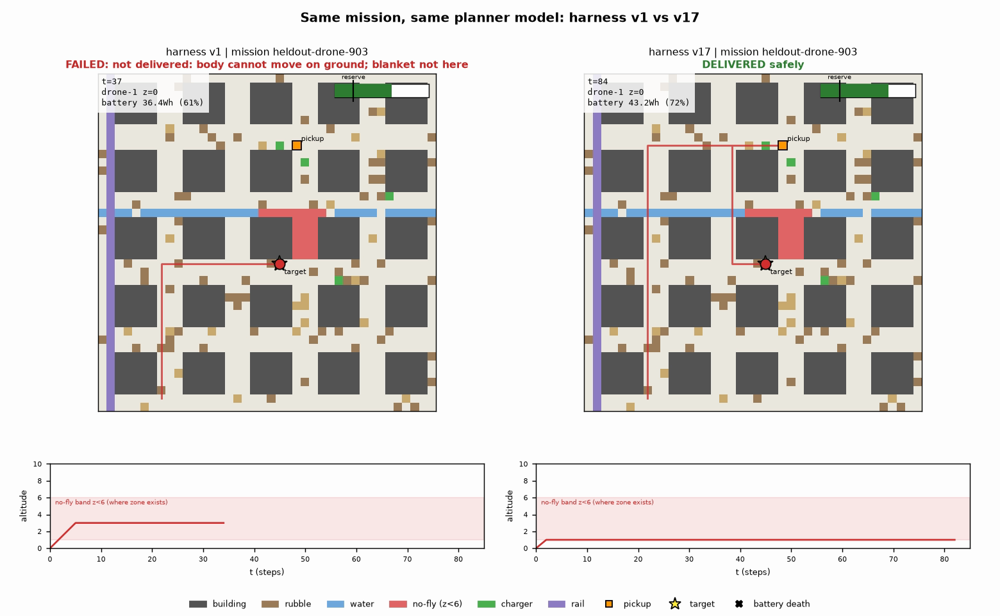

Harness Engineering · SF Tech Week
When a rescue team gets a new kind of robot, someone spends weeks rewriting its software. Morph's harness rewrites itself from its own failures.
Karthik Raja Anandan · github.com/kitrakrev/morph · kitrakrev.github.io/morph
The problem
Our drone's starting harness told it to drive. It failed all 12 held-out missions.
Each new or refitted body means an engineer rewrites rules, limits and routing, then re-tests. Days to weeks.
Trained controllers handle movement. Nobody adapts the mission layer above them automatically.
This is already happening
Disaster relief
Roads into western North Carolina were cut. Volunteers flew heavy-lift farm drones — built for crop spraying — to carry food, medicine and baby formula to about 100 people cut off in the mountains. Every flight plan was improvised by hand.
Nuclear emergency
Japan's nuclear-response robots, built after the 1999 accident, could not be used. Borrowed PackBots and T-Hawk drones went in instead; the Quince robot was stranded when its cable snapped. The review's main lesson: organising and systemising mixed robots.
Logistics
Until 2021 robots from different vendors had no standard way to coordinate on the same floor. MassRobotics' interoperability standard was first trialled at a FedEx site running several vendors' robots side by side.
Sources: DroneLife, “Private drone operators deliver aid after Hurricane Helene” (Oct 2024) · Nagatani et al., “Emergency response by robots to Fukushima-Daiichi accident: summary and lessons learned”, Industrial Robot (2012) · MassRobotics AMR Interoperability Standard, via Control Design / The Robot Report (2021)
What it saves
Lives
−51%
in-hospital deaths from postpartum hemorrhage at Rwandan hospitals served by delivery drones; blood arrives in 15–60 min instead of hours.
Morph's job: get the next drone body onto that network in minutes, not weeks.
Money
2–4×
the robot's price is typically spent again on integration and programming (industry estimates) — and much of it is redone for every new or refitted body.
Morph automates the mission layer of that work: rules, limits, routing, checks.
Measured in Morph
0 → 12/12
held-out missions for the drone (v1 → v17) and a Unitree Go2 on a new map and goal (v1 → v3), 0 safety violations; fixed-wing VTOL 6 → 12/12 in one edit.
Unsafe edits are blocked: the gate rejected versions that let the drone die mid-air.
Sources: Song, Jeon et al., “Last-Mile Delivery in Healthcare: Drone Delivery for Blood Products in Rwanda”, Manufacturing & Service Operations Management, via Knowledge at Wharton · integration cost: industry estimates (robot integrator cost guides, 2023–26) · Morph: live evidence viewer, kitrakrev.github.io/morph
Real robots, real jobs — in MuJoCo
MuJoCo Menagerie · skydio_x2
Real job: first responders' situational awareness, search and rescue, and inspection of buildings, bridges and power lines.
Our experiment: survey a city block from the air (90% coverage) and return home; no-fly zone in place.
v1 0/6 → v3 6/6 train, 4/4 regression, 0 violations
MuJoCo Menagerie · unitree_go2
Real job: enterprise configuration sold for site inspection and security patrol rounds at plants and utilities.
Our experiment: walk an industrial plant map, stop and scan two inspection points, return to start.
v1 0/12 → v3 12/12 held-out, 0 violations
MuJoCo Menagerie · unitree_g1
Real job: humanoid positioned for warehouse logistics and material handling.
Our experiment: carry a medkit across a hard 2D city (rubble, river) to a drop point and return home.
6/6 train from bootstrap — no edit needed
Robot models: google-deepmind/mujoco_menagerie (Skydio X2 provided by Skydio; Unitree Go2/G1). Each robot was given to Morph only as its model file — locomotion, mass and size were read from the model. Real-job sources: DroneLife, “Skydio markets X2E enterprise drone to governments” (2020); Unitree Go2 Ent / G1 product material. Results: kitrakrev.github.io/morph (MuJoCo backend).
How it works
Loop 1 · run missions
rules · workflow · beliefs
Claude Haiku, fixed
true physics, locked
locked scoring
failure signals
Loop 2 · evolve the harness
$rankFusion over past failures
Claude Sonnet: one edit + prediction
more deliveries, no new violations, no regression
one Atlas transaction → vN+1
The model never changes. Only the harness does.
The referees 🔒
Verifier — judges one mission
Reads only the physics log — never the planner's claims.
• every goal task actually met?
• violations: no-fly, collision, battery death, payload
• battery reserve kept · deadline met
→ success / fail, energy, violations
Gate — judges one proposed edit
Candidate re-runs train + regression missions. Kept only if all six pass:
✓ valid_eval — the evaluation actually ran
✓ legal_edit — locked fields untouched — no-fly & collision stay hard
✓ train_improves — more train missions succeed
✓ safety_not_worse — no new violations
✓ no_regression — the original task still passes
✓ cost_ok — cost per success not worse
Verdict + evidence written to Atlas in one transaction. Held-out maps scored only after acceptance.
No self-grading — can't make “success” easier.
Safety not tradable — v15/v16 let the drone die mid-air: rejected.
No overfitting — 0→12/12 is on maps never used for selection.
Results · drone
0/12 → 12/12
held-out missions on unseen maps (n=12), 0 safety violations, same planner model
Hard tier (long-range, loaded): 4/6 held-out (n=6), never tuned on
19 edits proposed, 2 accepted, 17 rejected — e.g. v14 flew through the no-fly zone 30 times
New body, fixed-wing VTOL: 6/12 → 12/12 held-out (n=12) in one generation: Raindrop flagged no-fly violations, the harness turned avoidance on
Quadruped, hexapod: 12/12 from structure alone (n=12 each)

Held-out mission 903: v1 tries to drive and fails; v17 flies every leg and delivers.
Every number from Atlas trials; held-out scored after acceptance, never used for selection.
Built on
| Piece | What it does in Morph |
|---|---|
| MongoDB Atlas | Versioned harness lineage · transaction on every promotion · autoEmbed (Voyage) + $rankFusion failure retrieval · time-series metrics · checkpoints · change-stream live feed |
| Atlas Agent Engine | Hosted memory server, live: episodic, procedural, semantic and taxonomic memory per body; mission episodes stored there (save ~0.5 s, search ~0.3 s) |
| Raindrop | Signal per trial and per gate decision; the evolution agent reads Raindrop's signals before each edit |
| Claude Code headless | Planner: Claude Haiku (fixed all day) · evolution agent: Claude Sonnet |
Prior art: prompt optimizers tune prompts; robot learning retrains policies. Morph adapts the harness to a new body, with no training.
What the evidence did — measured over 51 evolution decisions
MongoDB Atlas
50/51
decisions retrieved past failures via $rankFusion
15
robot lineages evolved on this shared memory
41
rejected edits stored with the failing check
Example: drone v8 read “measured 0.72 Wh/cell vs believed 0.4” from failure memory → raised the belief + added a reserve. Lineage, gate verdicts (one transaction), checkpoints and multimodal failure pictures all live here; held-out results never enter agent memory.
Raindrop
27
decisions queried Raindrop for live signals
11
got real data (signal counts + failure outputs)
4
of those were accepted by the gate
Example: fixed-wing v2 — Raindrop flagged 2 no-fly violations; the agent switched on avoid_nofly → held-out 6 → 12/12 (no-fly cells on mission 902: 16 → 0). Medic-drone decisions quoted Raindrop's battery-death / reserve-breach counts.
The gate is why both matter: of 41 rejections, 27 failed train_improves, 18 safety_not_worse, 16 cost_ok, 3 legal_edit (e.g. Go2 inventing a non-primitive skill). Evidence proposes; the gate decides.
Honest limit: Raindrop reaches the loop through MCP from a headless agent, and its index can lag fresh trials by ~20 min — 16 queries came back empty. Atlas evidence is instant, so it carried every decision.
Scope
Planning layer on top of each robot's own controller · simulated physics, no sim-to-real claim · known movement types · every number reported with n.
It can expand what it does, never how it's judged.
Raindrop sees the failure. Atlas remembers it. The harness fixes itself. The gate proves it.
kitrakrev.github.io/morph · github.com/kitrakrev/morph
Backup · Q&A
Accepted edits changed the workflow graph (feasibility check + replan branch), the harness's own energy beliefs and budgets, and body rules.
Physics and verifier are locked; held-out missions are hidden from the agent. The verifier always scores no-fly as a violation, the gate never accepts more, and an edit that turns avoidance off is refused before it runs.
Two layers: trained controllers move the body; Morph adapts the mission layer above them, with no training data and minutes per edit.
Memory retrieval hurt twice (rejected); charger choice is fixed code, so the harness can't learn it yet.